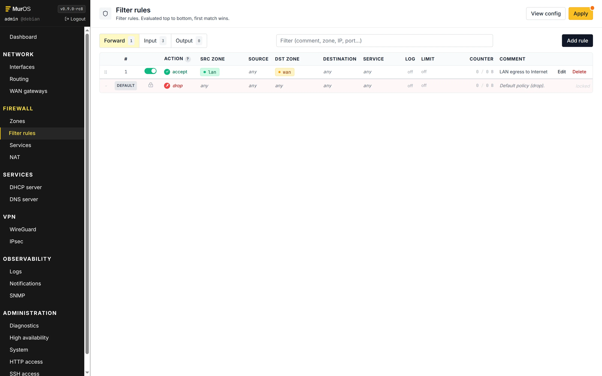
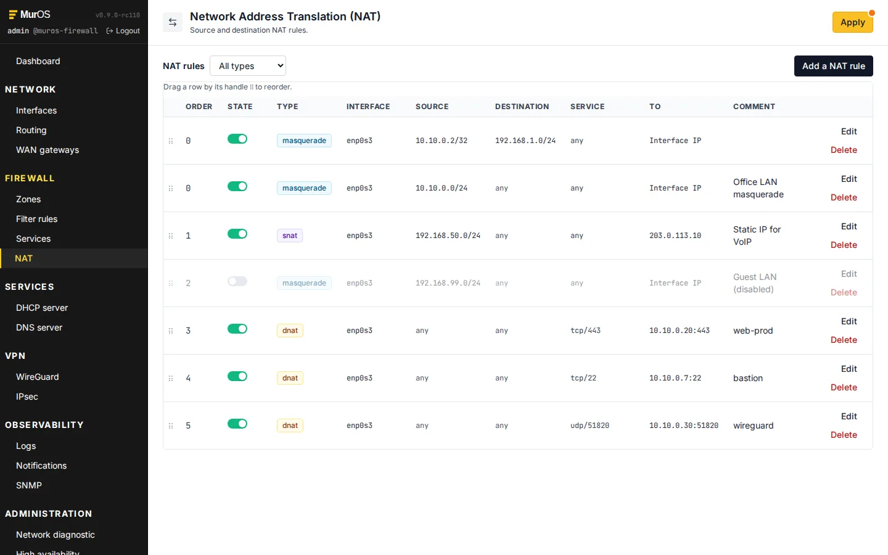
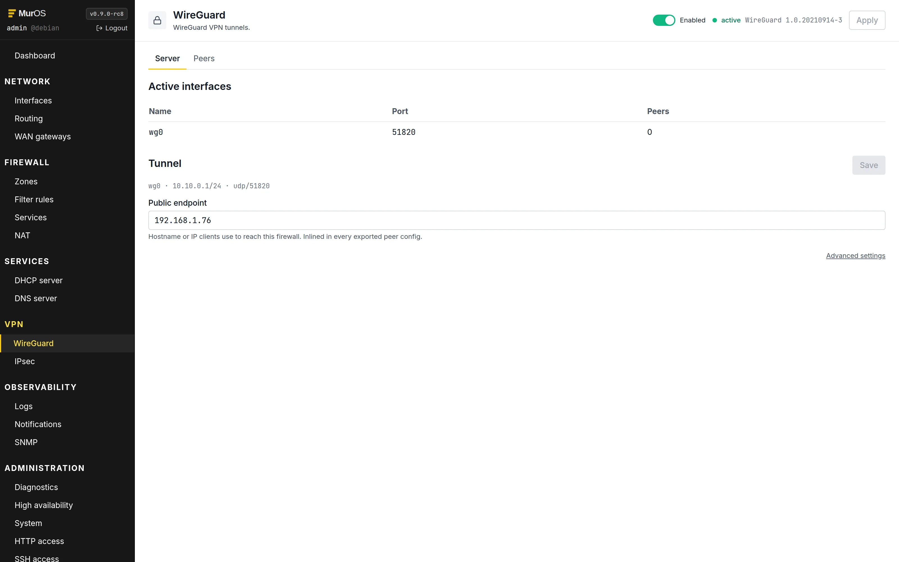
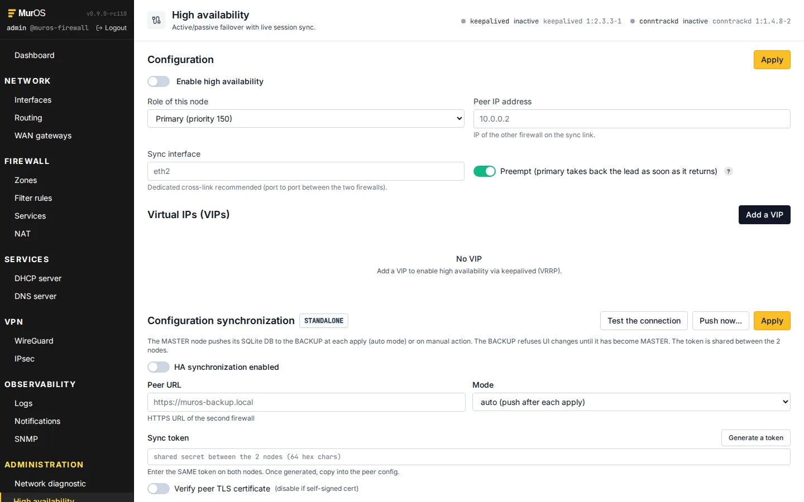

Features
Everything in this list ships in the default muros Debian package. There is no separate enterprise edition, no paywalled module.
{kind=link}

{kind=link}

{kind=link}

{kind=link}

Modules in detail
One entry per page or tab actually present in the web UI.
Network
- Interfaces. Static / DHCP / unconfigured per NIC. IPv4 with /CIDR, MTU, optional comment.
- 802.1Q VLANs. Add tagged sub-interfaces, persisted in DB and replayed by muros-boot.service before network-online.target.
- Routing. Static routes in the main table, with metric and optional source.
- Multi-WAN gateways. Multiple WAN gateways with ICMP health probes, automatic default-route swap on failure, configurable per-gateway weight.
- Zones. Symbolic groups of interfaces (lan, wan, dmz, custom). Rules reference zones, not interface names, so re-cabling does not rewrite the ruleset.
Firewall
- Filter rules. input / forward / output chains, action accept / drop / reject, per-rule log, rate-limit, comment.
- Drag-and-drop ordering. Same UX as NAT.
- Service groups. Reusable named port + protocol sets (e.g. http_https, dns, ssh).
- Address groups. Reusable CIDR / IP sets, referenced from rules.
- Live counters. Per-rule packets and bytes pulled from nft, refreshed in the UI.
- Default deny + state matching. Stateful, out of the box.
- Dry-run preview. Generated nft ruleset shown before Apply.
- Apply with auto-rollback. If the new ruleset breaks the management session, the previous ruleset is restored.
NAT
- Masquerade per outgoing interface for cheap outbound internet.
- SNAT with explicit source IP.
- DNAT to publish internal services on a public port.
- Redirects. Port-to-port on the same host (e.g. 80 -> 8080).
- Drag-and-drop reorder. Same UX as filter rules.
LAN services
- DHCP server. dnsmasq backend, per-interface pools, gateway and DNS offered, lease time. Static leases by MAC.
- Active lease view. Reads dnsmasq.leases, shows MAC, IP, hostname, expiry.
- Recursive DNS. Unbound resolver, DNSSEC validation, forwarders, local A and AAAA records.
- System resolver toggle. Optionally point /etc/resolv.conf at the local Unbound.
VPN
- WireGuard. Server config (interface, listen port, MTU), peer list with key generation, persists across reboots.
- IPsec. StrongSwan, PSK or cert-based connections, road-warrior support.
- Built-in PKI. CA, leaf certs, CRL, all managed from the IPsec page. No openssl on the CLI.
- IPsec users. Per-user EAP credentials.
High availability
- VRRP active / passive via keepalived, one VIP per interface.
- Conntrack sync. conntrackd replicates connections to the slave, no TCP reset on takeover.
- Inter-node DB sync. The slave mirrors the master MurOS database so a takeover keeps the full config.
- Asymmetric pairs supported. Different vendors and NIC counts work as long as enabled interfaces line up.
Observability
- Dashboard. CPU, memory, disk, swap, conntrack, throughput per interface, service state. Refreshed every 3 seconds.
- Firewall logs. journalctl -k filtered on the nft prefix, action / rule id / packet columns, infinite scroll.
- Audit log. Every UI write action recorded (user, method, path, status, source IP, payload digest).
- System journal. Per-unit journalctl viewer, errors-only filter, auto-refresh, tail mode.
- Notifications. SMTP relay config, event watcher rules (HA takeover, multi-WAN failover, apt updates, conntrack exhaustion, ...). Optional Postfix smarthost.
- SNMP. Standard Debian snmpd, community + CIDR ACL, sysContact, sysLocation.
Diagnostic
- Live tools. ping, traceroute, dig, tcpdump (timed), conntrack -L, nft list ruleset.
- Per-tool args. Source interface, packet count, timeout, BPF filter for tcpdump.
- Streaming output. Server-Sent Events, no copy-paste from a shell.
System
- General. Hostname, time zone, locale, kernel and Debian version.
- NTP. chrony or systemd-timesyncd, configurable servers, current offset.
- System DNS. /etc/resolv.conf (separate from the recursive resolver).
- Backups. One-click snapshots of DB + nftables ruleset + network config + NTP + DNS. Local archive plus remote push via rclone, FTP or SSH. Restore from any snapshot.
- Updates (apt). apt-get update + upgrade view, kernel reboot indicator, deferred reboot scheduling.
- Maintenance. Reboot, shutdown, scheduled at a future time.
HTTP access
- Administrator account. Login + password policy (12+ chars, mixed case, digits, symbol).
- HaveIBeenPwned check. k-anonymity API call rejects pwned passwords on change.
- TOTP MFA. Standard RFC 6238, any authenticator app.
- Web listen interface. Bind nginx to all interfaces, a specific zone IP, or localhost only.
- HTTP / HTTPS ports. Configurable, with HTTP -> HTTPS redirect.
- TLS certificate. Upload existing PEM cert + key, or generate a self-signed RSA 4096 in one click.
SSH access
- Install / remove openssh-server from the UI.
- Listen address and port per sshd_config drop-in.
- Authorized keys for root, with paste-in or upload.
- Linux root password reset (separately from the UI admin account).
Hardening
- sysctl drop-in. Forwarding, rp_filter, BCP-38 anti-spoof, conntrack tuning.
- sshd drop-in. No root password, no challenge response, MaxAuthTries.
- fail2ban drop-in. MurOS filter for the UI login, sshd jail.
- journald drop-in. Persistent storage, size cap.
- API rate limit. Per-IP login attempts throttled at the FastAPI layer.
Out of scope, by design
SD-WAN with application steering, HTTP proxy / web filter with HTTPS interception, gateway antivirus, dynamic routing (OSPF / BGP), reverse proxy / HTTP load balancer, OpenVPN, non-Debian distributions. MurOS stays smaller in scope on purpose.